Niharika Vullaganti
PhD candidate in Natural Resource Management at North Dakota State University, teaching cameras, AI and robots to read soil nutrients right in the field.
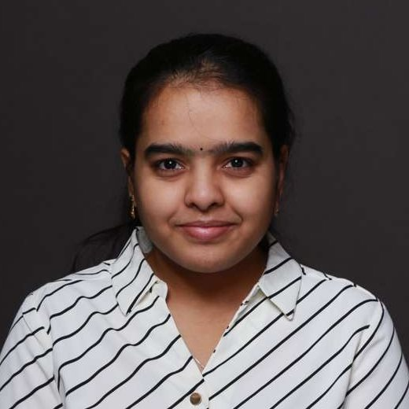
About
I am a precision agriculture researcher at North Dakota State University, working in the Department of Agricultural and Biosystems Engineering with Dr. Xin (Rex) Sun. My work asks how farmers can know what their soil needs, field by field and spot by spot, fast enough to act on it.
I combine hyperspectral sensing, deep learning and ground robots to measure soil nitrogen, phosphorus and moisture in real time, so fertilizer goes only where it is needed. My path here ran through soil science at Punjab Agricultural University, satellite mapping of irrigation demand at the Punjab Remote Sensing Centre, and testing more than a thousand soil samples for farmers' soil health cards in Andhra Pradesh.
Looking ahead, I want to expand site-specific input management and variable rate technology, and serve the many people who keep the food system running, from farmers to agronomists to policymakers.
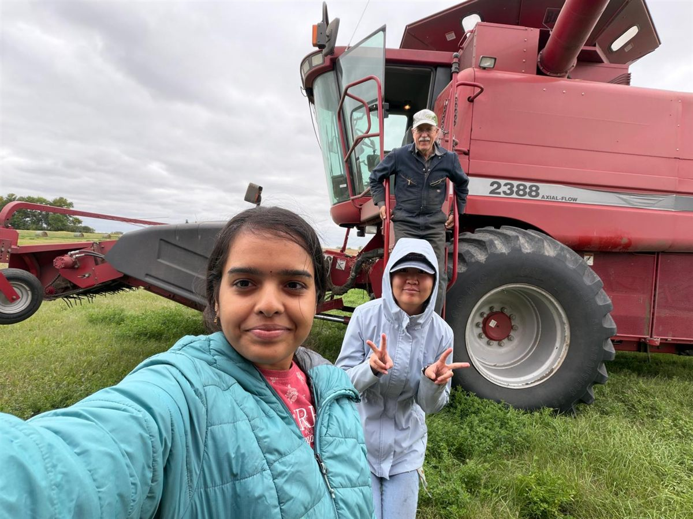
Education
- Ph.D. Natural Resource Management
- Graduate Certificate, Big Data Applied Statistical Analysis
- M.Sc. Soil Science
- B.Sc. (Hons) Agriculture
Research
Hyperspectral soil sensing with AI
Soil reflects light differently depending on what it holds. I train deep learning models, including multitask networks and neural architecture search, on hyperspectral images across the VNIR and SWIR ranges to predict soil nitrogen and phosphorus together, replacing slow lab tests with a scan.
Robots for real-time soil assessment
With engineers, agronomists and soil scientists, I am putting these models onto ground robots (UGVs) so they can assess nutrients and moisture as they drive the field. The goal is an autonomous soil health monitor that feeds variable rate fertilizer decisions.
Water and irrigation from above
Using satellite imagery, Google Earth Engine and GIS, I have mapped evapotranspiration, cropping patterns and wheat irrigation needs across Ludhiana district in Punjab. I also built a low-cost IoT prototype that schedules irrigation in real time.
Teaching, outreach and entrepreneurship
I have taught middle school students to deploy AI on robots for weed detection, guest lectured in NDSU's Introduction to Precision Agriculture, and trained farmers and interns in India. As an NDSU Possibility Fellow I am building HydroVerdant, an AI-powered hydroponic kitchen garden.
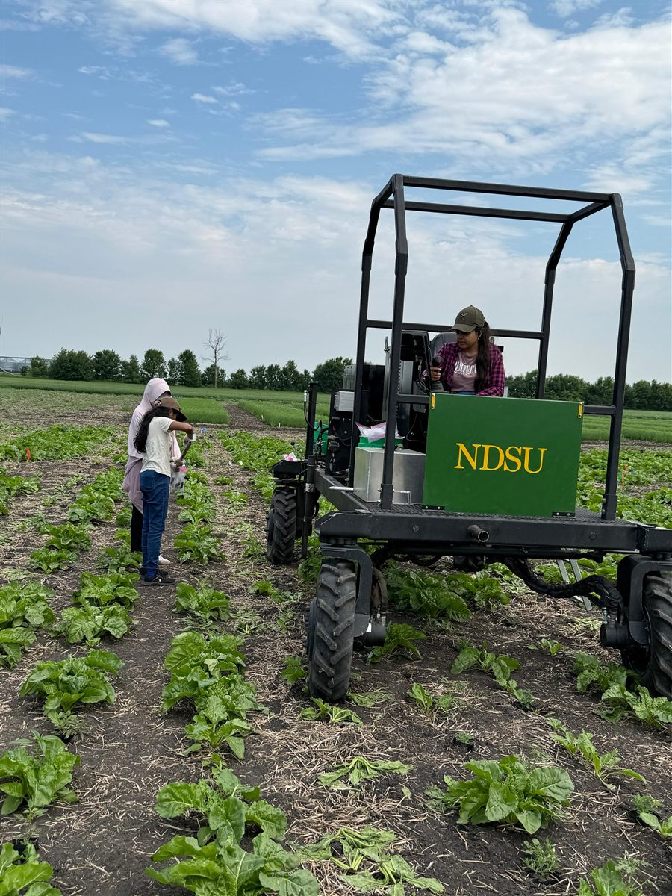
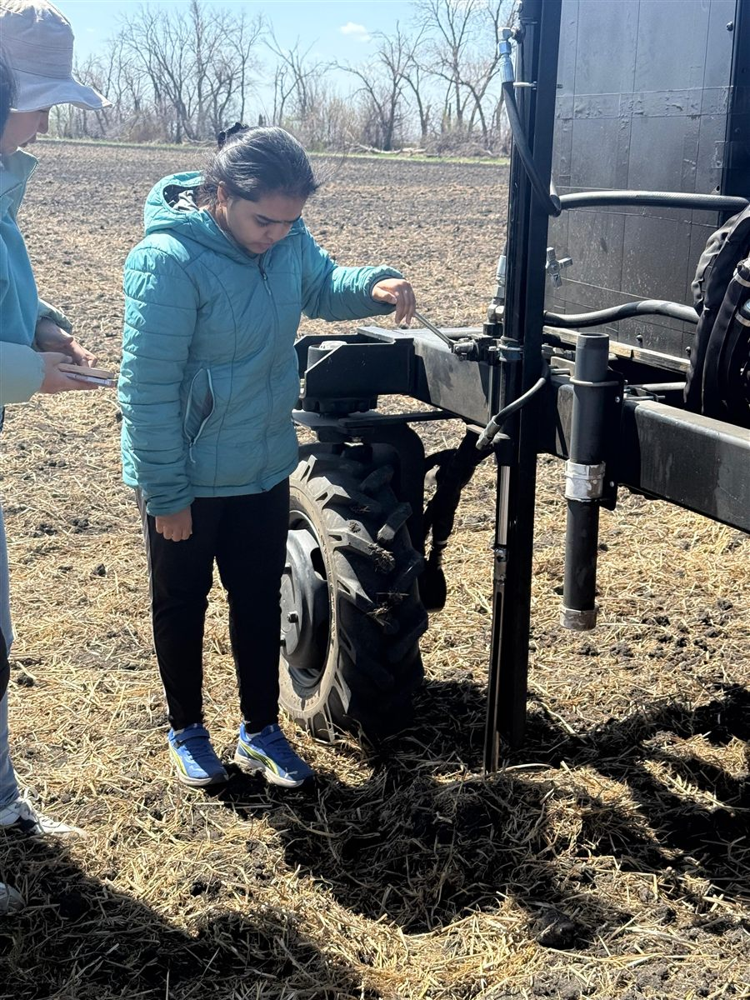
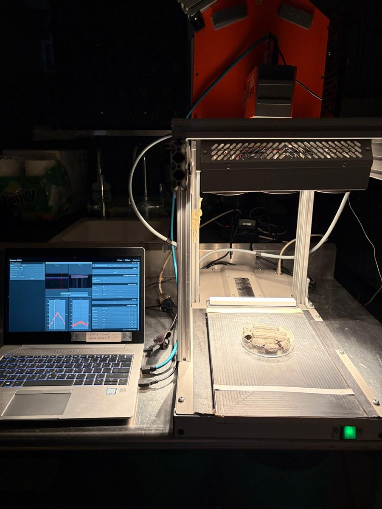
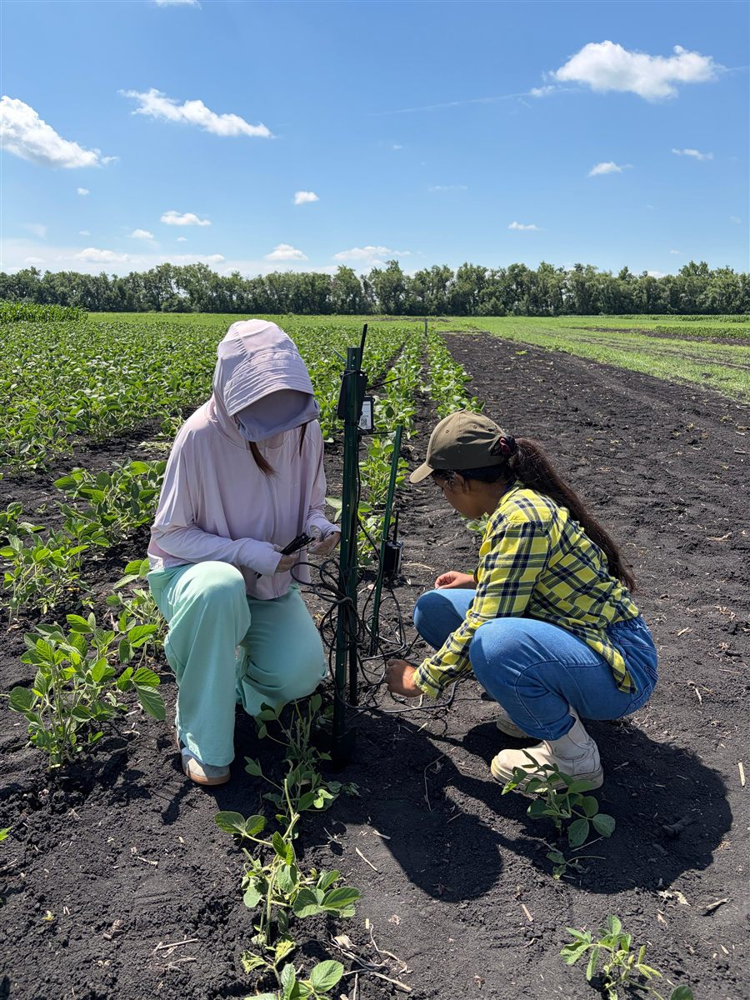
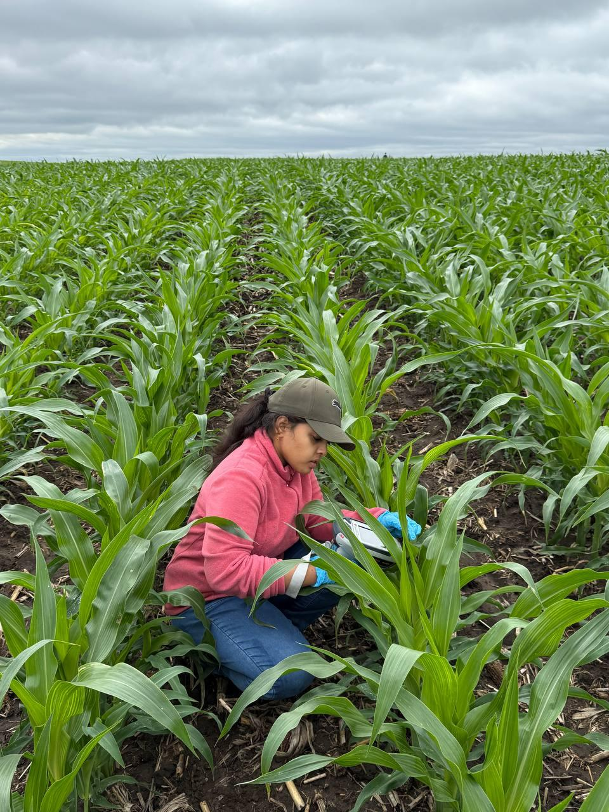
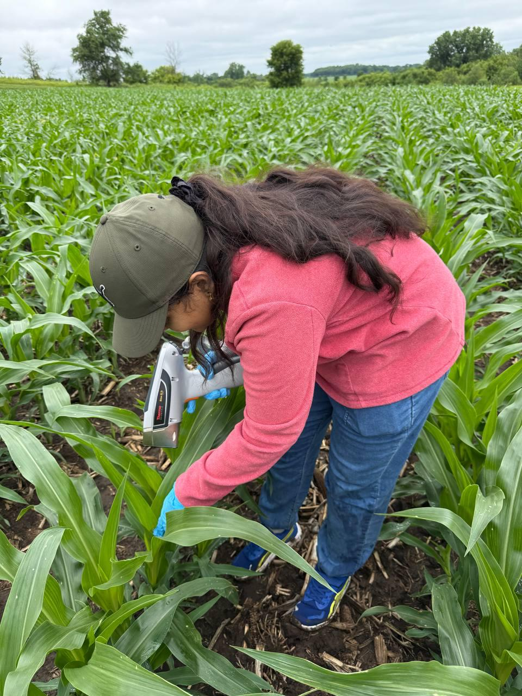
Publications
Talks and posters
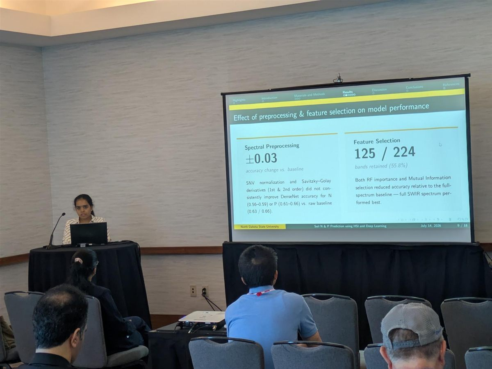
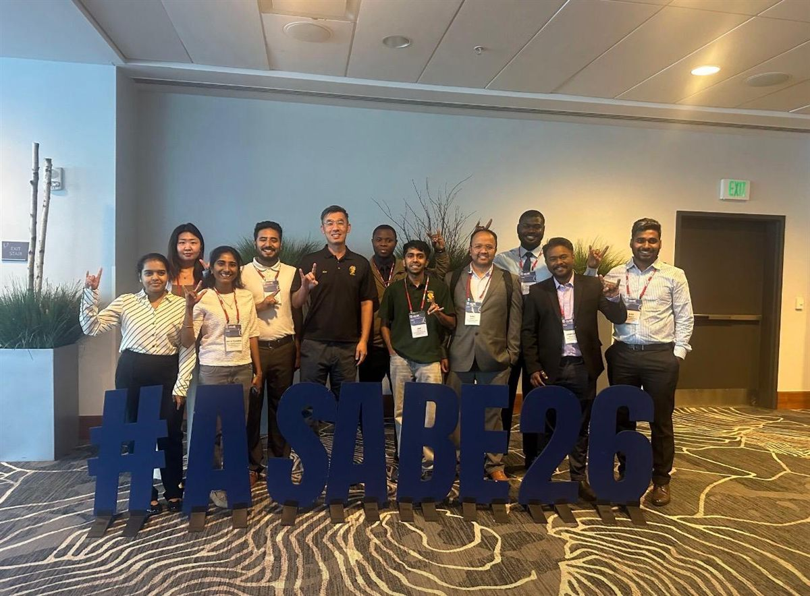
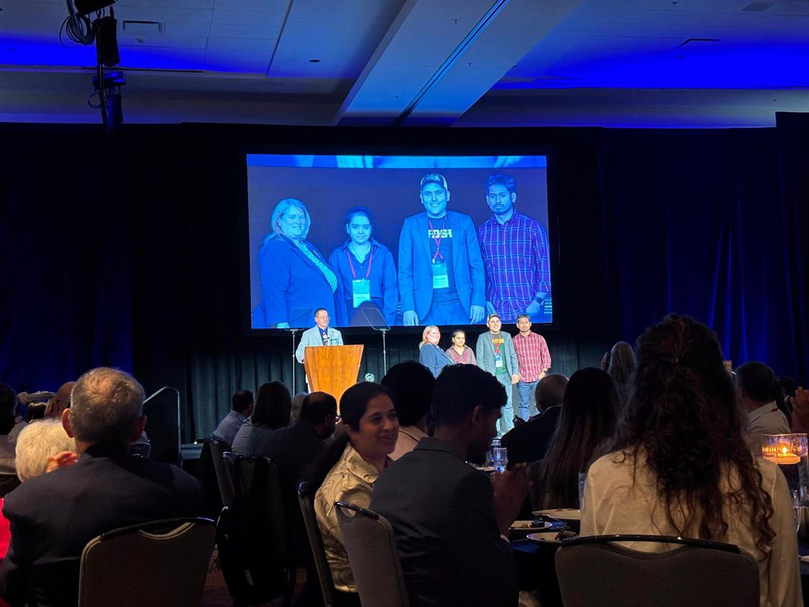
News and wins
Writing
CV
My full academic CV, with education, funding, teaching and service, is available as a PDF.
Contact
The best way to reach me is email. I am glad to hear from fellow researchers, students and anyone curious about plants.